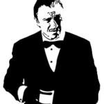

Ciao! Sono Davide, e adoro tutto ciò che funziona.
Sono un ingegnere con una passione per il design, da problem solver nato mi piace creare soluzioni che puntano sempre all'efficacia e all'efficienza. Cerco costantemente soluzioni definitive: non perché esistano, ma perché mirare alla perfezione porta a risultati di alta qualità.
La programmazione e lo sviluppo software non sono il mio lavoro principale, ma strumenti essenziali nella mia vita quotidiana. Scrivo codice con curiosità e pragmatismo, sfruttando i linguaggi di programmazione per far fare al PC quello che sa fare meglio e più velocemente di me.
Credo nel potere della crescita attraverso la condivisione di idee. Per questo motivo, condivido le mie soluzioni nella speranza che possano essere utili anche ad altri. Chi cerca una ruota, se non trova esattamente quella giusta, potrebbe trovare un'ispirazione o qualcosa di simile.

"Sono il Sig. Wolf, risolvo problemi" (Il celebre Mr.Wolf)